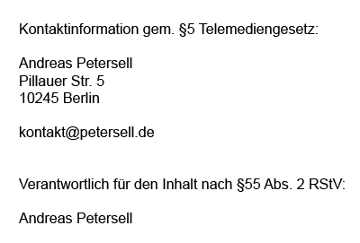

Datenschutzerklärung
Diese Datenschutzerklärung klärt Sie über die Art, den Umfang und Zweck der Verarbeitung von personenbezogenen Daten (nachfolgend kurz „Daten“) innerhalb unseres Onlineangebotes und der mit ihm verbundenen Webseiten, Funktionen und Inhalte sowie externen Onlinepräsenzen, wie z.B. unser Social Media Profile auf. (nachfolgend gemeinsam bezeichnet als „Onlineangebot“). Im Hinblick auf die verwendeten Begrifflichkeiten, wie z.B. „Verarbeitung“ oder „Verantwortlicher“ verweisen wir auf die Definitionen im Art. 4 der Datenschutzgrundverordnung (DSGVO).
Verantwortlicher
Der Verantwortliche ist die unter Kontaktinformation aufgeführte Person.
https://www.petersell.com/pages/impressum
Arten der verarbeiteten Daten:
- Bestandsdaten (z.B., Namen, Adressen).
- Kontaktdaten (z.B., E-Mail).
- Inhaltsdaten (z.B., Texteingaben, Fotografien, Videos).
- Nutzungsdaten (z.B., besuchte Webseiten, Interesse an Inhalten, Zugriffszeiten).
- Meta-/Kommunikationsdaten (z.B., Geräte-Informationen, IP-Adressen).
Zweck der Verarbeitung
- Zurverfügungstellung des Onlineangebotes, seiner Funktionen und Inhalte.
- Beantwortung von Kontaktanfragen und Kommunikation mit Nutzern.
- Sicherheitsmaßnahmen.
Verwendete Begrifflichkeiten
„Personenbezogene Daten“ sind alle Informationen, die sich auf eine identifizierte oder identifizierbare natürliche Person (im Folgenden „betroffene Person“) beziehen; als identifizierbar wird eine natürliche Person angesehen, die direkt oder indirekt, insbesondere mittels Zuordnung zu einer Kennung wie einem Namen, zu einer Kennnummer, zu Standortdaten, zu einer Online-Kennung (z.B. Cookie) oder zu einem oder mehreren besonderen Merkmalen identifiziert werden kann, die Ausdruck der physischen, physiologischen, genetischen, psychischen, wirtschaftlichen, kulturellen oder sozialen Identität dieser natürlichen Person sind.
„Verarbeitung“ ist jeder mit oder ohne Hilfe automatisierter Verfahren ausgeführten Vorgang oder jede solche Vorgangsreihe im Zusammenhang mit personenbezogenen Daten. Der Begriff reicht weit und umfasst praktisch jeden Umgang mit Daten.
Als „Verantwortlicher“ wird die natürliche oder juristische Person, Behörde, Einrichtung oder andere Stelle, die allein oder gemeinsam mit anderen über die Zwecke und Mittel der Verarbeitung von personenbezogenen Daten entscheidet, bezeichnet.
Maßgebliche Rechtsgrundlagen
Nach Maßgabe des Art. 13 DSGVO teilen wir Ihnen die Rechtsgrundlagen unserer Datenverarbeitungen mit. Sofern die Rechtsgrundlage in der Datenschutzerklärung nicht genannt wird, gilt Folgendes: Die Rechtsgrundlage für die Einholung von Einwilligungen ist Art. 6 Abs. 1 lit. a und Art. 7 DSGVO, die Rechtsgrundlage für die Verarbeitung zur Erfüllung unserer Leistungen und Durchführung vertraglicher Maßnahmen sowie Beantwortung von Anfragen ist Art. 6 Abs. 1 lit. b DSGVO, die Rechtsgrundlage für die Verarbeitung zur Erfüllung unserer rechtlichen Verpflichtungen ist Art. 6 Abs. 1 lit. c DSGVO, und die Rechtsgrundlage für die Verarbeitung zur Wahrung unserer berechtigten Interessen ist Art. 6 Abs. 1 lit. f DSGVO. Für den Fall, dass lebenswichtige Interessen der betroffenen Person oder einer anderen natürlichen Person eine Verarbeitung personenbezogener Daten erforderlich machen, dient Art. 6 Abs. 1 lit. d DSGVO als Rechtsgrundlage.
Sicherheitsmaßnahmen
Wir bitten Sie sich regelmäßig über den Inhalt unserer Datenschutzerklärung zu informieren. Wir passen die Datenschutzerklärung an, sobald die Änderungen der von uns durchgeführten Datenverarbeitungen dies erforderlich machen. Wir informieren Sie, sobald durch die Änderungen eine Mitwirkungshandlung Ihrerseits (z.B. Einwilligung) oder eine sonstige individuelle Benachrichtigung erforderlich wird.
Zusammenarbeit mit Auftragsverarbeitern und Dritten
Sofern wir im Rahmen unserer Verarbeitung Daten gegenüber anderen Personen und Unternehmen (Auftragsverarbeitern oder Dritten) offenbaren, sie an diese übermitteln oder ihnen sonst Zugriff auf die Daten gewähren, erfolgt dies nur auf Grundlage einer gesetzlichen Erlaubnis (z.B. wenn eine Übermittlung der Daten an Dritte, wie an Zahlungsdienstleister, gem. Art. 6 Abs. 1 lit. b DSGVO zur Vertragserfüllung erforderlich ist), Sie eingewilligt haben, eine rechtliche Verpflichtung dies vorsieht oder auf Grundlage unserer berechtigten Interessen (z.B. beim Einsatz von Beauftragten, Webhostern, etc.).
Sofern wir Dritte mit der Verarbeitung von Daten auf Grundlage eines sog. „Auftragsverarbeitungsvertrages“ beauftragen, geschieht dies auf Grundlage des Art. 28 DSGVO.
Übermittlungen in Drittländer
Sofern wir Daten in einem Drittland (d.h. außerhalb der Europäischen Union (EU) oder des Europäischen Wirtschaftsraums (EWR)) verarbeiten oder dies im Rahmen der Inanspruchnahme von Diensten Dritter oder Offenlegung, bzw. Übermittlung von Daten an Dritte geschieht, erfolgt dies nur, wenn es zur Erfüllung unserer (vor)vertraglichen Pflichten, auf Grundlage Ihrer Einwilligung, aufgrund einer rechtlichen Verpflichtung oder auf Grundlage unserer berechtigten Interessen geschieht. Vorbehaltlich gesetzlicher oder vertraglicher Erlaubnisse, verarbeiten oder lassen wir die Daten in einem Drittland nur beim Vorliegen der besonderen Voraussetzungen der Art. 44 ff. DSGVO verarbeiten. D.h. die Verarbeitung erfolgt z.B. auf Grundlage besonderer Garantien, wie der offiziell anerkannten Feststellung eines der EU entsprechenden Datenschutzniveaus (z.B. für die USA durch das „Privacy Shield“) oder Beachtung offiziell anerkannter spezieller vertraglicher Verpflichtungen (so genannte „Standardvertragsklauseln“).
Rechte der betroffenen Personen
Sie haben das Recht, eine Bestätigung darüber zu verlangen, ob betreffende Daten verarbeitet werden und auf Auskunft über diese Daten sowie auf weitere Informationen und Kopie der Daten entsprechend Art. 15 DSGVO.
Sie haben entsprechend. Art. 16 DSGVO das Recht, die Vervollständigung der Sie betreffenden Daten oder die Berichtigung der Sie betreffenden unrichtigen Daten zu verlangen.
Sie haben nach Maßgabe des Art. 17 DSGVO das Recht zu verlangen, dass betreffende Daten unverzüglich gelöscht werden, bzw. alternativ nach Maßgabe des Art. 18 DSGVO eine Einschränkung der Verarbeitung der Daten zu verlangen.
Sie haben das Recht zu verlangen, dass die Sie betreffenden Daten, die Sie uns bereitgestellt haben nach Maßgabe des Art. 20 DSGVO zu erhalten und deren Übermittlung an andere Verantwortliche zu fordern.
Sie haben ferner gem. Art. 77 DSGVO das Recht, eine Beschwerde bei der zuständigen Aufsichtsbehörde einzureichen.
Widerrufsrecht
Sie haben das Recht, erteilte Einwilligungen gem. Art. 7 Abs. 3 DSGVO mit Wirkung für die Zukunft zu widerrufen
Widerspruchsrecht
Sie können der künftigen Verarbeitung der Sie betreffenden Daten nach Maßgabe des Art. 21 DSGVO jederzeit widersprechen. Der Widerspruch kann insbesondere gegen die Verarbeitung für Zwecke der Direktwerbung erfolgen.
Löschung von Daten
Die von uns verarbeiteten Daten werden nach Maßgabe der Art. 17 und 18 DSGVO gelöscht oder in ihrer Verarbeitung eingeschränkt. Sofern nicht im Rahmen dieser Datenschutzerklärung ausdrücklich angegeben, werden die bei uns gespeicherten Daten gelöscht, sobald sie für ihre Zweckbestimmung nicht mehr erforderlich sind und der Löschung keine gesetzlichen Aufbewahrungspflichten entgegenstehen. Sofern die Daten nicht gelöscht werden, weil sie für andere und gesetzlich zulässige Zwecke erforderlich sind, wird deren Verarbeitung eingeschränkt. D.h. die Daten werden gesperrt und nicht für andere Zwecke verarbeitet. Das gilt z.B. für Daten, die aus handels- oder steuerrechtlichen Gründen aufbewahrt werden müssen.
Nach gesetzlichen Vorgaben in Deutschland, erfolgt die Aufbewahrung insbesondere für 10 Jahre gemäß §§ 147 Abs. 1 AO, 257 Abs. 1 Nr. 1 und 4, Abs. 4 HGB (Bücher, Aufzeichnungen, Lageberichte, Buchungsbelege, Handelsbücher, für Besteuerung relevanter Unterlagen, etc.) und 6 Jahre gemäß § 257 Abs. 1 Nr. 2 und 3, Abs. 4 HGB (Handelsbriefe).
Nach gesetzlichen Vorgaben in Österreich erfolgt die Aufbewahrung insbesondere für 7 J gemäß § 132 Abs. 1 BAO (Buchhaltungsunterlagen, Belege/Rechnungen, Konten, Belege, Geschäftspapiere, Aufstellung der Einnahmen und Ausgaben, etc.), für 22 Jahre im Zusammenhang mit Grundstücken und für 10 Jahre bei Unterlagen im Zusammenhang mit elektronisch erbrachten Leistungen, Telekommunikations-, Rundfunk- und Fernsehleistungen, die an Nichtunternehmer in EU-Mitgliedstaaten erbracht werden und für die der Mini-One-Stop-Shop (MOSS) in Anspruch genommen wird.
Hosting
Die von uns in Anspruch genommenen Hosting-Leistungen dienen der Zurverfügungstellung der folgenden Leistungen: Infrastruktur- und Plattformdienstleistungen, Rechenkapazität, Speicherplatz und Datenbankdienste, Sicherheitsleistungen sowie technische Wartungsleistungen, die wir zum Zwecke des Betriebs dieses Onlineangebotes einsetzen.
Hierbei verarbeiten wir, bzw. unser Hostinganbieter Bestandsdaten, Kontaktdaten, Inhaltsdaten, Vertragsdaten, Nutzungsdaten, Meta- und Kommunikationsdaten von Kunden, Interessenten und Besuchern dieses Onlineangebotes auf Grundlage unserer berechtigten Interessen an einer effizienten und sicheren Zurverfügungstellung dieses Onlineangebotes gem. Art. 6 Abs. 1 lit. f DSGVO i.V.m. Art. 28 DSGVO (Abschluss Auftragsverarbeitungsvertrag).
Erhebung von Zugriffsdaten und Logfiles
Wir, bzw. unser Hostinganbieter, erhebt auf Grundlage unserer berechtigten Interessen im Sinne des Art. 6 Abs. 1 lit. f. DSGVO Daten über jeden Zugriff auf den Server, auf dem sich dieser Dienst befindet (sogenannte Serverlogfiles). Zu den Zugriffsdaten gehören Name der abgerufenen Webseite, Datei, Datum und Uhrzeit des Abrufs, übertragene Datenmenge, Meldung über erfolgreichen Abruf, Browsertyp nebst Version, das Betriebssystem des Nutzers, Referrer URL (die zuvor besuchte Seite), IP-Adresse und der anfragende Provider.
Logfile-Informationen werden aus Sicherheitsgründen (z.B. zur Aufklärung von Missbrauchs- oder Betrugshandlungen) für die Dauer von maximal 7 Tagen gespeichert und danach gelöscht. Daten, deren weitere Aufbewahrung zu Beweiszwecken erforderlich ist, sind bis zur endgültigen Klärung des jeweiligen Vorfalls von der Löschung ausgenommen.
Kommentare und Beiträge
Wenn Nutzer Kommentare oder sonstige Beiträge hinterlassen, können ihre IP-Adressen auf Grundlage unserer berechtigten Interessen im Sinne des Art. 6 Abs. 1 lit. f. DSGVO für 7 Tage gespeichert werden. Das erfolgt zu unserer Sicherheit, falls jemand in Kommentaren und Beiträgen widerrechtliche Inhalte hinterlässt (Beleidigungen, verbotene politische Propaganda, etc.). In diesem Fall können wir selbst für den Kommentar oder Beitrag belangt werden und sind daher an der Identität des Verfassers interessiert.
Des Weiteren behalten wir uns vor, auf Grundlage unserer berechtigten Interessen gem. Art. 6 Abs. 1 lit. f. DSGVO, die Angaben der Nutzer zwecks Spamerkennung zu verarbeiten.
Onlinepräsenzen in sozialen Medien
Wir unterhalten Onlinepräsenzen innerhalb sozialer Netzwerke und Plattformen, um mit den dort aktiven Kunden, Interessenten und Nutzern kommunizieren und sie dort über unsere Leistungen informieren zu können. Beim Aufruf der jeweiligen Netzwerke und Plattformen gelten die Geschäftsbedingungen und die Datenverarbeitungsrichtlinien deren jeweiligen Betreiber.
Soweit nicht anders im Rahmen unserer Datenschutzerklärung angegeben, verarbeiten wir die Daten der Nutzer sofern diese mit uns innerhalb der sozialen Netzwerke und Plattformen kommunizieren, z.B. Beiträge auf unseren Onlinepräsenzen verfassen oder uns Nachrichten zusenden.
Einbindung von Diensten und Inhalten Dritter
Wir setzen innerhalb unseres Onlineangebotes auf Grundlage unserer berechtigten Interessen (d.h. Interesse an der Analyse, Optimierung und wirtschaftlichem Betrieb unseres Onlineangebotes im Sinne des Art. 6 Abs. 1 lit. f. DSGVO) Inhalts- oder Serviceangebote von Drittanbietern ein, um deren Inhalte und Services, wie z.B. Videos oder Schriftarten einzubinden (nachfolgend einheitlich bezeichnet als “Inhalte”).
Dies setzt immer voraus, dass die Drittanbieter dieser Inhalte, die IP-Adresse der Nutzer wahrnehmen, da sie ohne die IP-Adresse die Inhalte nicht an deren Browser senden könnten. Die IP-Adresse ist damit für die Darstellung dieser Inhalte erforderlich. Wir bemühen uns nur solche Inhalte zu verwenden, deren jeweilige Anbieter die IP-Adresse lediglich zur Auslieferung der Inhalte verwenden. Drittanbieter können ferner so genannte Pixel-Tags (unsichtbare Grafiken, auch als "Web Beacons" bezeichnet) für statistische oder Marketingzwecke verwenden. Durch die "Pixel-Tags" können Informationen, wie der Besucherverkehr auf den Seiten dieser Website ausgewertet werden. Die pseudonymen Informationen können ferner in Cookies auf dem Gerät der Nutzer gespeichert werden und unter anderem technische Informationen zum Browser und Betriebssystem, verweisende Webseiten, Besuchszeit sowie weitere Angaben zur Nutzung unseres Onlineangebotes enthalten, als auch mit solchen Informationen aus anderen Quellen verbunden werden.
Vimeo
Wir können die Videos der Plattform “Vimeo” des Anbieters Vimeo Inc., Attention: Legal Department, 555 West 18th Street New York, New York 10011, USA, einbinden. Datenschutzerklärung: https://vimeo.com/privacy. WIr weisen darauf hin, dass Vimeo Google Analytics einsetzen kann und verweisen hierzu auf die Datenschutzerklärung (https://www.google.com/policies/privacy) sowie Opt-Out-Möglichkeiten für Google-Analytics (http://tools.google.com/dlpage/gaoptout?hl=de) oder die Einstellungen von Google für die Datennutzung zu Marketingzwecken (https://adssettings.google.com/.).
Innerhalb unseres Onlineangebotes können Funktionen und Inhalte des Dienstes Twitter, angeboten durch die Twitter Inc., 1355 Market Street, Suite 900, San Francisco, CA 94103, USA, eingebunden werden. Hierzu können z.B. Inhalte wie Bilder, Videos oder Texte und Schaltflächen gehören, mit denen Nutzer Ihr Gefallen betreffend die Inhalte kundtun, den Verfassern der Inhalte oder unsere Beiträge abonnieren können. Sofern die Nutzer Mitglieder der Plattform Twitter sind, kann Twitter den Aufruf der o.g. Inhalte und Funktionen den dortigen Profilen der Nutzer zuordnen. Twitter ist unter dem Privacy-Shield-Abkommen zertifiziert und bietet hierdurch eine Garantie, das europäische Datenschutzrecht einzuhalten (https://www.privacyshield.gov/participant?id=a2zt0000000TORzAAO&status=Active). Datenschutzerklärung: https://twitter.com/de/privacy, Opt-Out: https://twitter.com/personalization.
Erstellt mit Datenschutz-Generator.de von RA Dr. Thomas Schwenke